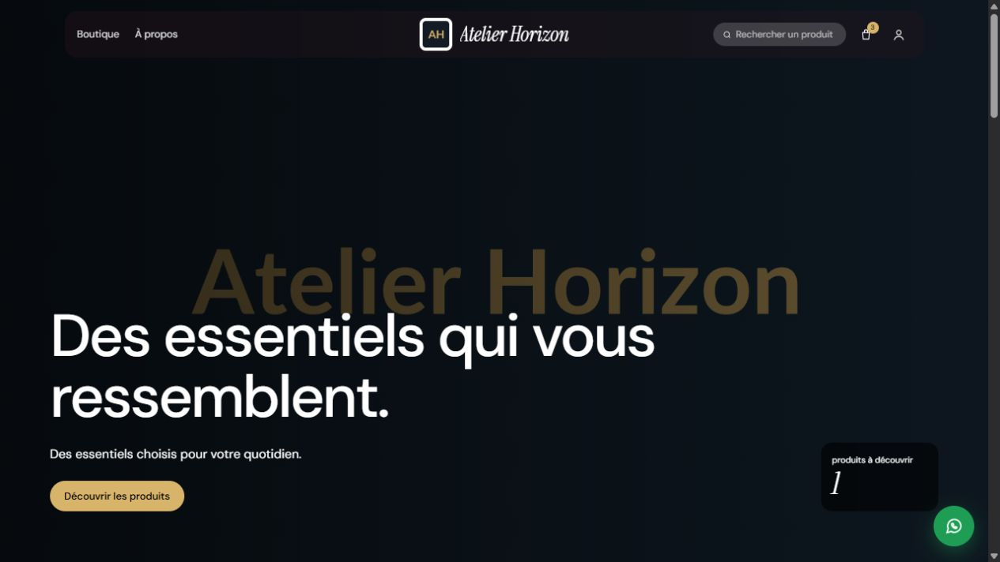
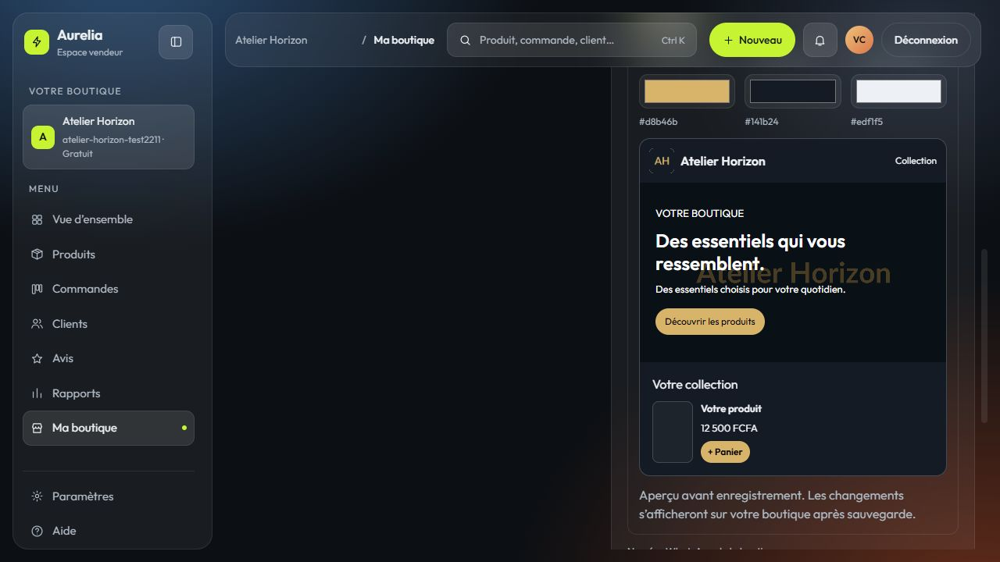
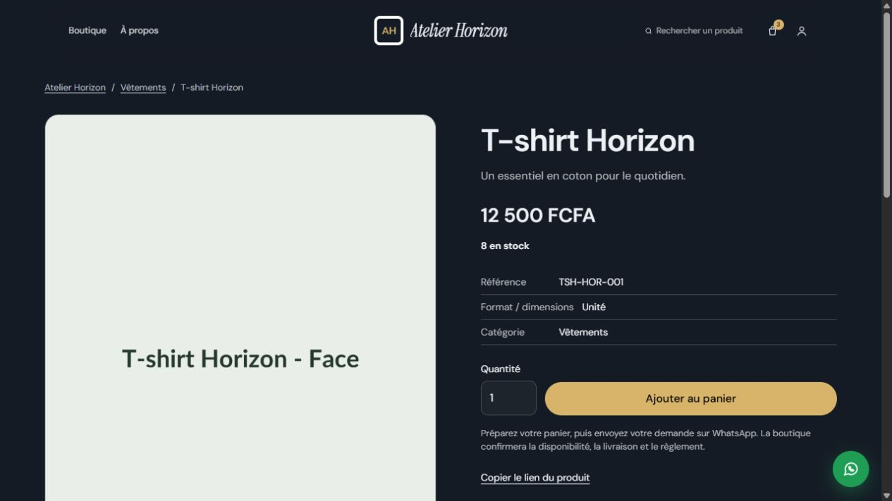
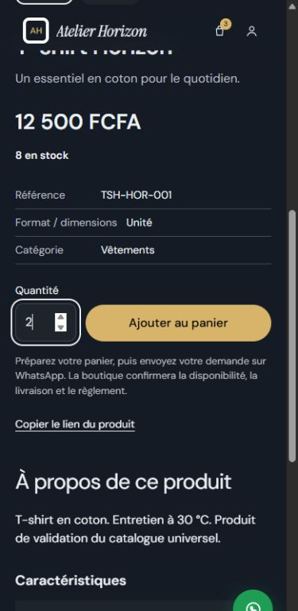
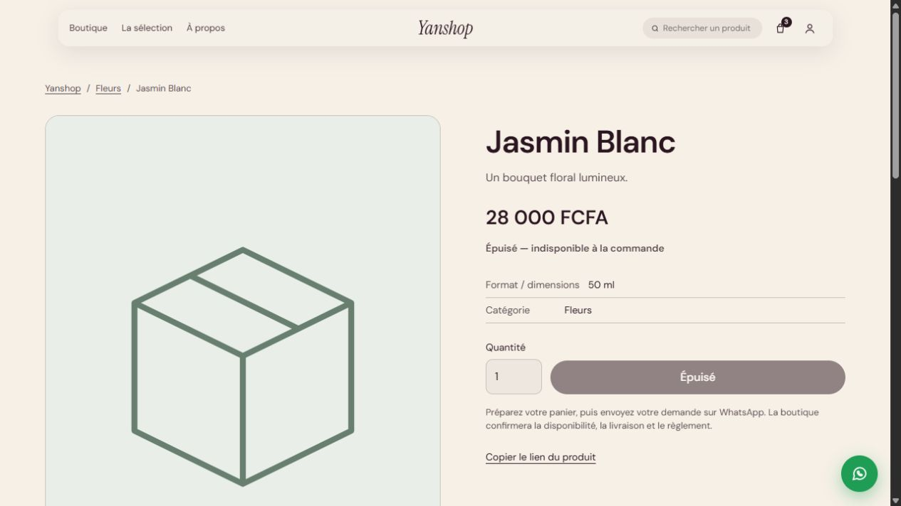
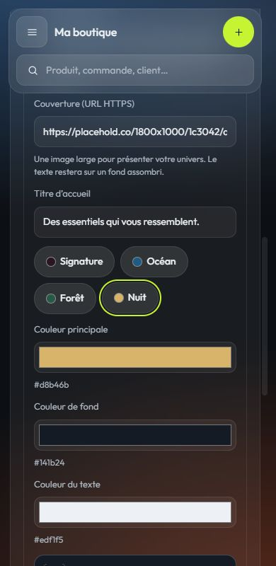

Personnalisation des boutiques — Lot 2
22 novembre 2026 · Branche feature/personnalisation-boutiques-lot-2.
Identité visuelle
- Logo et couverture par liens HTTPS ; retrait possible en effaçant les champs.
- Titre d’accueil et slogan propres à la boutique.
- Couleur principale, fond et texte ; palettes Signature, Océan, Forêt et Nuit.
- Aperçu dans le dashboard avant sauvegarde. Les couleurs sont appliquées à la boutique et aux fiches, aux boutons, au catalogue et au pied de page.
- Contraste texte/fond vérifié côté serveur ; texte des boutons calculé pour rester lisible sur les accents clairs et sombres.
- En cas d’image indisponible, le nom de la boutique et le visuel de repli restent utilisables.
La démonstration applique un logo AH, une couverture et la palette Nuit à la boutique de test Atelier Horizon. Les images sont des visuels de test. Aucune identité visuelle n’a été inventée ou enregistrée pour Yanshop.


Fiches produit
- Lien direct
/s/boutique/p/identifiant, accessible depuis le catalogue, la sélection, les nouveautés ou une URL partagée. - Galerie avec miniatures et agrandissement ; fermeture par bouton, clic sur le fond ou Échap.
- Prix, ancien prix et remise, disponibilité, référence, format, catégorie, description détaillée et caractéristiques.
- Quantité avant ajout au panier, limite de stock et panier conservé entre le catalogue et la fiche.
- Avis publiés du produit uniquement et suggestions dans la même catégorie.
- Copie du lien, fil d’Ariane, retour au catalogue et recherche depuis la fiche.
- Produit masqué, supprimé ou appartenant à une autre boutique : fiche publique indisponible.
Les demandes restent finalisées sur WhatsApp. Aucun paiement, réservation ou décrémentation automatique du stock n’est ajouté.


Conservation de Yanshop
La sauvegarde complète avant migration est dans .local/backups/personnalisation-lot2-2026-11-22/aurelia-avant-lot2.dump. Elle reste locale et exclue de Git.
| Données existantes | Résultat |
|---|
| 8 produits et 4 catégories | Conservés, avec leurs identifiants et champs historiques |
| 1 client, 1 commande, 1 ligne de commande | Conservés sans modification |
| Prix, stocks, promotions, visibilité, caractéristiques et coordonnées | Inchangés |
| Identité visuelle | Valeurs par défaut ; aucun logo ou couverture enregistré |
Les visites de test peuvent ajouter des événements de consultation ; les événements déjà présents sont conservés. Comparaison détaillée des données.
Jasmin Blanc reste épuisé, avec le bouton et la quantité désactivés. Bergamote Secrète reste masquée.

Tests et vérifications
npm test : 42 tests réussis, incluant conservation lors de la migration 004, validation de l’identité et calcul des quantités du panier.npm run test:branding:postgres : 8 tests réussis sur PostgreSQL natif.npm run test:catalogue:postgres : 9 tests réussis sur le catalogue du lot 1.npm run test:postgres : 17 contrôles SaaS réussis.npm run build : les deux interfaces compilent.- Les deux serveurs Vite accèdent correctement au module de thème partagé, en mode développement.
- Navigateur : sauvegarde de l’identité, chargement réel du logo et de la couverture, deuxième photo, agrandissement, Échap, copie du lien, recherche et chargement direct de la fiche.
- Deux unités ajoutées à une ligne existante d’une unité : trois unités, total 37 500 FCFA. Une quantité de 9 pour un stock de 8 désactive l’ajout.
- Fiche et réglages testés à 390 et 320 pixels, sans débordement horizontal.
Aucun message WhatsApp n’a été envoyé durant les tests.

Migration et limites
npm run db:migrate applique la migration 004 une seule fois. Elle ajoute les champs d’identité dans stores sans mettre à jour les lignes existantes ni les produits. Les écritures utilisent toujours la session du propriétaire ; les fiches publiques filtrent les produits actifs de la boutique demandée.
Les images sont configurées par URL HTTPS ; le téléversement de fichiers n’est pas inclus. Les variantes et le stock par variante restent prévus pour le lot 3. Les fiches sont rendues par l’application React ; les aperçus sociaux enrichis côté serveur ne font pas partie de ce lot.
Le thème utilise des couleurs validées ; aucun HTML ou CSS arbitraire n’est accepté. La migration de base est indépendante de la branche Git. Pour un retour complet, restaurer la sauvegarde dans une autre base et vérifier les données avant de reconfigurer l’application.
Personnaliser une boutique · Yanshop · Atelier Horizon — test